King
 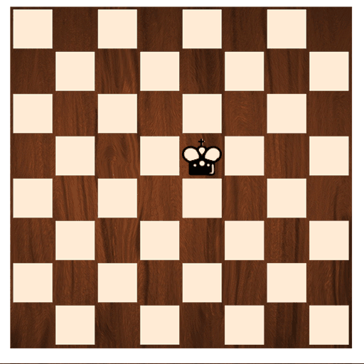
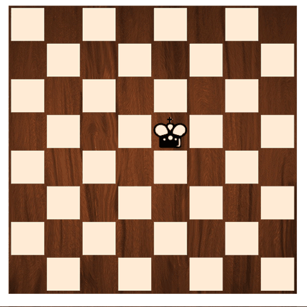
The king can move one space in any direction to any adjacent square.
There are a whole bunch of chess pieces. They move in all sorts of crazy ways.
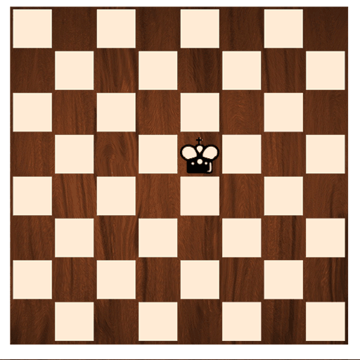
The king can move one space in any direction to any adjacent square.
The queen can move in a straight line along the rows, columns, or diagonal lines on the board.
 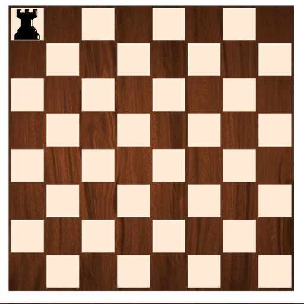
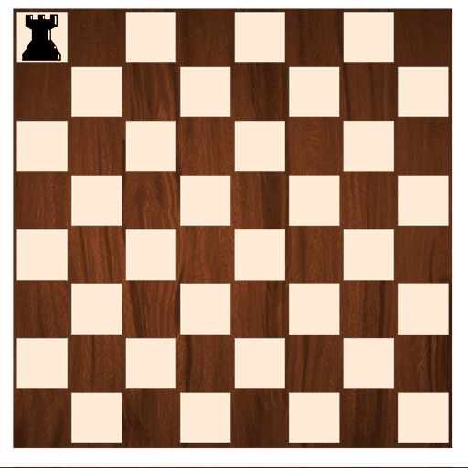
The rook can move in a straight line along columns or rows, but not diagonally.
 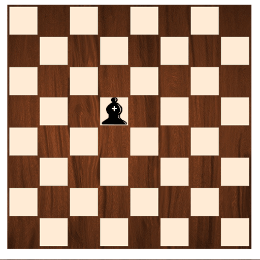
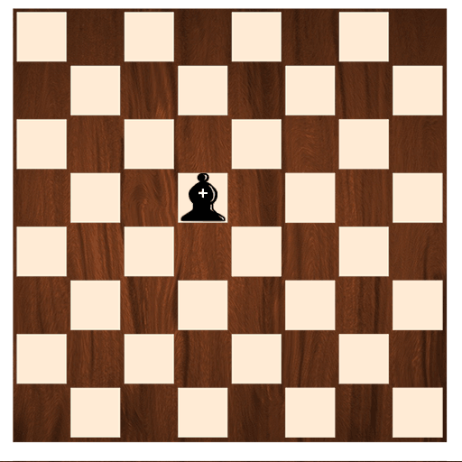
The bishop moves diagonally. You can move it along a diagonal as many spaces as you like.
 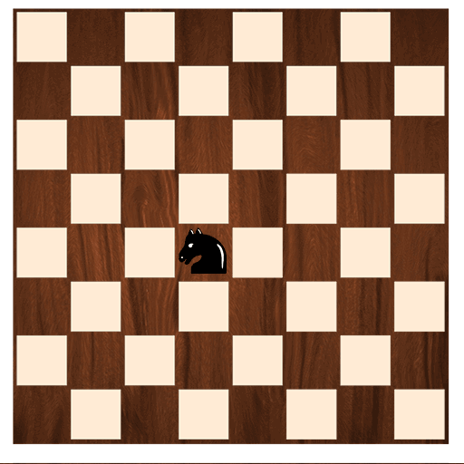
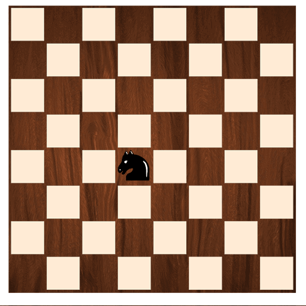
The knight moves two spaces along a row or column, and then an aditional one space in a perpendicular direction. It traces out a shape looks like a letter L. It's pretty wild.
 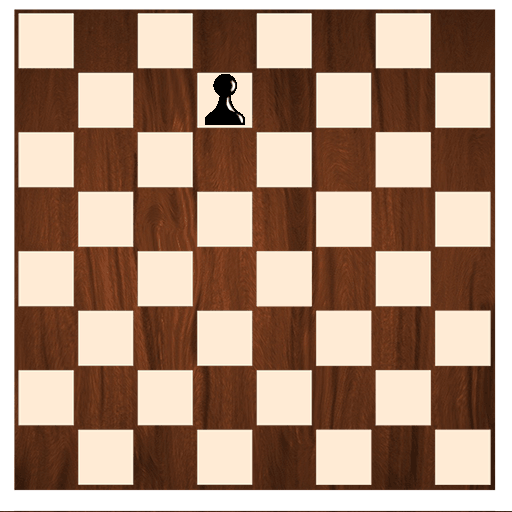
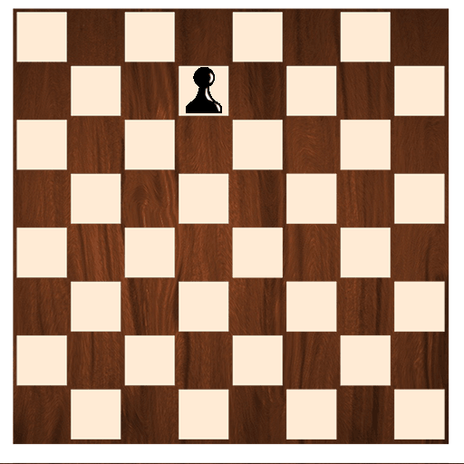
The pawn can advance one space forward. It captures by moving one space diagonally. On a pawn's first move it can advance two spaces instead of one.